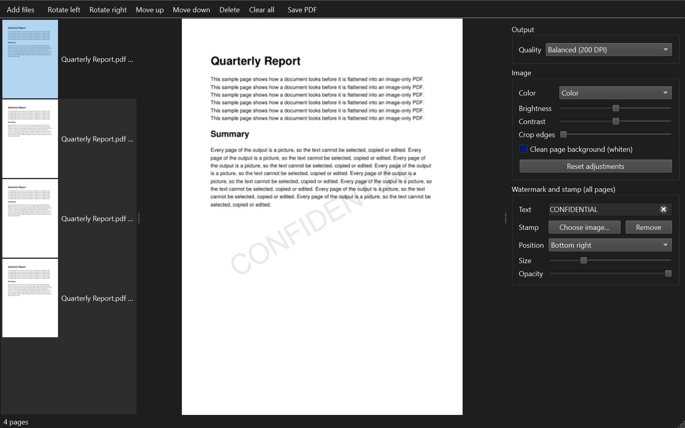

PDF Maker
Turn Word documents, PDFs and images into a flattened PDF. Every page becomes a picture, so the text cannot be selected, copied or edited.
Free and open source. Windows 10 or 11, 64-bit. About 100 MB download.

What it does
- Word, PDF and images inMix .docx, .pdf, .jpg, .png and more. They are merged into one PDF.
- Arrange pagesDrag to reorder, rotate, or delete pages before saving.
- Choose qualityFrom a small 150 DPI file to lossless 300 DPI.
- Clean page backgroundsGrey, yellow or shadowed paper becomes white. Good for scans and phone photos.
- Adjust the imageColour, grayscale or black-and-white, brightness, contrast and crop.
- Watermark and stampAdd diagonal text, or a logo or signature image.
How to use it
- Download the zip and unzip it anywhere.
- Open the
PDFMakerfolder and runPDFMaker.exe. - Drag your files onto the window.
- Arrange pages and pick your settings. The preview updates as you go.
- Click Save PDF.
The app is not code-signed, so Windows may show a SmartScreen warning the first time: choose “More info”, then “Run anyway”. Word files need Microsoft Word or LibreOffice installed; PDFs and images work without either.